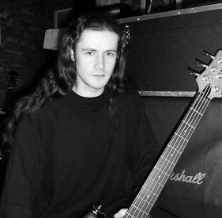

Ben
Ben joined Sabbra Cadabra, in early 2001, replacing original bassist Rob. Ben had been playing for 3 years in a local 70's rock covers band called, "Eclipse". His initial inspiration was kicked off by the Faith No More cover of War Pigs and then never looked back. Ben sighted bands such as Metallica in his long term influences and noting that the guy got married in an Alice in Wonderland costume, we figured he had the necessary insanity for the job.